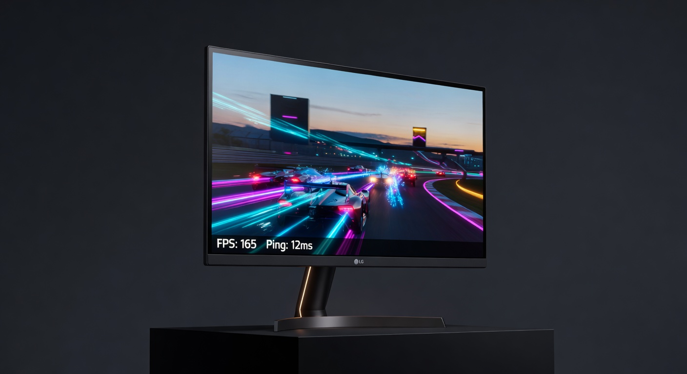

As an Amazon Associate I earn from qualifying purchases. Links below may earn us a commission at no extra cost to you.
ASUS VG279QM vs LG 27GP850-B: 280Hz 1080p vs 165Hz 1440p at the Same Price
Same 27" size. Same ~$249 price. Wildly different priorities. The ASUS TUF Gaming VG279QM pushes 280Hz at 1080p — raw speed for competitive players who need every frame advantage they can get. The LG 27GP850-B UltraGear runs 165Hz at 1440p — 78% more pixels, richer color, and DisplayHDR 600 for gamers who want stunning visuals. This is the clearest FPS-vs-IQ tradeoff at the $249 price point.

ASUS TUF VG279QM
~$249
VS

LG 27GP850-B UltraGear
~$249
Quick Verdict
ASUS for competitive FPS/esports; LG for balanced gaming with superior image quality
At identical prices, the ASUS VG279QM and LG 27GP850-B represent two completely different gaming philosophies. The ASUS delivers 280Hz — a framerate ceiling only competitive esports players will realistically reach, paired with 1080p that demands far less GPU power. The LG delivers 1440p Nano IPS with 98% DCI-P3 color and DisplayHDR 600 — every game looks noticeably richer and sharper. Buy the ASUS if you play CS2, Valorant, or Apex competitively and run 200+ FPS consistently. Buy the LG if you want the best visual experience for most games, genres, and GPU budgets.
Head-to-Head: Category by Category
Refresh Rate & Framerate Ceiling
ASUS VG279QM (280Hz)
The VG279QM's 280Hz native refresh rate is one of the highest available at this price. The gap over 165Hz is genuinely felt in fast-twitch esports games — enemy movement looks smoother, input lag is lower, and target tracking is easier. That said, reaching 280 FPS consistently requires a top-tier GPU (RTX 4080-class or better at 1080p). If you're running a mid-range GPU, you'll be GPU-limited before you hit the monitor's ceiling. For the average gamer, 165Hz is plenty fast and fully competitive.
Resolution & Image Sharpness
LG 27GP850-B (1440p)
1440p vs 1080p on a 27" screen is a visible and significant difference. The LG renders 78% more pixels — text is sharper, textures are more detailed, and the overall image looks cleaner at normal viewing distances. The ASUS at 1080p/27" gives just 82 PPI, which is noticeably soft at close ranges. The LG at 1440p/27" gives 108 PPI — a comfortable, crisp image. Unless you specifically need maximum framerate at minimum GPU load, 1440p is the better day-to-day resolution at 27".
Color Quality & Vibrancy
LG 27GP850-B (Nano IPS)
The LG's Nano IPS panel covers 98% DCI-P3 and 135% sRGB — colors are rich, accurate, and consistent across the panel. The ASUS covers 99% sRGB, which is solid but sRGB is a much smaller gamut than DCI-P3. In practice, games look noticeably more vivid on the LG — foliage, explosions, and skies all pop with wider color depth. For any game with strong art direction or HDR content, the LG's color advantage is immediately apparent. The ASUS is accurate within sRGB, but not vibrant.
HDR Performance
LG 27GP850-B (DisplayHDR 600)
DisplayHDR 600 (LG) vs DisplayHDR 400 (ASUS) is a meaningful spec gap. The LG peaks at 500 cd/m² in HDR mode and meets the minimum brightness threshold where HDR actually looks different — bright highlights punch through without washing out shadows. The ASUS's DisplayHDR 400 certification is real but delivers a subtler HDR effect. Neither is OLED-class HDR, but the LG's extra headroom makes HDR content visibly more impactful, especially in games with strong lighting design.
GPU Requirements
ASUS VG279QM (1080p)
1080p demands roughly 40–50% less GPU horsepower than 1440p to achieve the same framerate. If you're running a mid-range GPU (RTX 4060, RX 7600), you'll reach 200+ FPS in most esports titles at 1080p on Ultra settings — hitting the ASUS's refresh rate ceiling is achievable. To reach 165 FPS at 1440p on the LG, you'll want at least an RTX 4070 for demanding titles. If your GPU budget is tight or you're primarily an esports player, the ASUS's 1080p makes high framerates far more accessible.
Value for Most Gamers
LG 27GP850-B
At exactly the same price, the LG 27GP850-B delivers a broader, more versatile experience. The majority of gamers play a mix of genres — not exclusively esports titles — and they'll benefit more from the LG's sharper resolution, wider color gamut, and stronger HDR. The ASUS's 280Hz advantage is real but narrow: it only matters in competitive esports, only if your GPU can sustain those framerates, and only if you'd notice the difference over 165Hz. For the average gamer at $249, the LG delivers more of what you'll see every session.
Spec Comparison
| Spec | ASUS TUF VG279QM | LG 27GP850-B |
|---|---|---|
| Price | ~$249 | ~$249 |
| Panel | Fast IPS | Nano IPS |
| Size | 27" | 27" |
| Resolution | 1920×1080 (Full HD) | 2560×1440 (QHD) |
| Refresh Rate | 280Hz (native) | 165Hz (OC: 180Hz) |
| Response Time | 1ms GTG / 0.5ms MPRT | 1ms GTG |
| Color Coverage | 99% sRGB | 98% DCI-P3, 135% sRGB |
| HDR | DisplayHDR 400 | DisplayHDR 600 |
| Brightness | 400 cd/m² | 400 cd/m² typ, 500 cd/m² HDR peak |
| Adaptive Sync | G-Sync Compatible + FreeSync Premium | G-Sync Compatible + FreeSync Premium |
| Pixels Per Inch | 82 PPI | 108 PPI |
Which Should You Buy?
ASUS TUF Gaming VG279QM
~$249
Best for: Competitive FPS · CS2 / Valorant / Apex · Mid-range GPU builds
🛒 Check Price on Amazon
Full Review →
LG 27GP850-B UltraGear
~$249
Best for: Balanced gaming · Visual quality · 1440p across all genres
🛒 Check Price on Amazon
Full Review →
More Monitor Guides & Comparisons
Frequently Asked Questions
For most gamers, the difference between 165Hz and 280Hz is subtle and situational. The jump from 60Hz to 165Hz is immediately obvious to nearly everyone. The jump from 165Hz to 280Hz is noticeable primarily in competitive esports games (CS2, Valorant, Apex Legends) where fast target tracking matters and your GPU can sustain 200+ FPS consistently. Casual and single-player gamers won't feel the gap. Competitive esports players aiming for ranked play will — particularly the smoother tracking during fast mouse movements.
At 27", 1080p (82 PPI) is noticeably softer than 1440p (108 PPI), especially at close viewing distances (50–65cm). Text looks slightly fuzzy, fine textures lose detail, and UI elements appear less crisp. It's not unusable — most gamers adapt quickly — but side-by-side with 1440p it's a visible step down. If visual quality or productivity use matters to you, 1440p at 27" is strongly preferred. If you're purely gaming for high framerate at the competitive level, the tradeoff is worth it for some players.
To consistently reach 280 FPS in competitive esports titles: CS2 and Valorant are the most achievable — an RTX 4070 or RX 7800 XT will hit 280+ FPS on medium/high settings. Apex Legends is harder, typically needing an RTX 4080 or better to sustain 280 FPS. For AAA games at 1080p, 280 FPS is unrealistic even on high-end hardware. In practice, 280Hz is a ceiling for esports titles on upper-mid to high-end GPUs — not something most $249 monitor buyers will regularly hit.
Yes — the LG 27GP850-B is G-Sync Compatible certified, which means it works with Nvidia GPUs via Adaptive Sync with verified compatibility testing. It also supports AMD FreeSync Premium. G-Sync Compatible is functionally equivalent for gaming purposes: it eliminates screen tearing and reduces stutter across the VRR range. The ASUS VG279QM is also G-Sync Compatible + FreeSync Premium. Both monitors are fully adaptive-sync capable on either Nvidia or AMD GPUs.
For most gamers, the LG 27GP850-B delivers more value at $249. The combination of 1440p resolution, Nano IPS color (98% DCI-P3), DisplayHDR 600, and 165Hz covers virtually every gaming use case at a level the ASUS can't match for visual quality. The ASUS VG279QM is the better buy only if you're specifically building a competitive esports rig, can sustain 200+ FPS consistently, and prioritize framerate over every other metric. If you're unsure which category you fall into, the LG is the safer, more versatile choice.
Affiliate Disclosure: As an Amazon Associate I earn from qualifying purchases. Prices may vary.